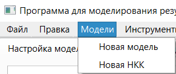

1. To create a new FCM, use the "New model" option in the "File" menu. As a result, a new empty model is created. The previous model is not deleted. It remains available in the "Models" menu.

2. In the same way, the current model is preserved when a saved model is loaded, when a new model is created from a template, or when FCMs are joined.
3. To switch to the required model, select its name in the "Models" menu list. The information about the selected model is then shown in the workspace of the main window.